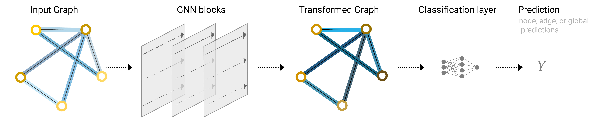
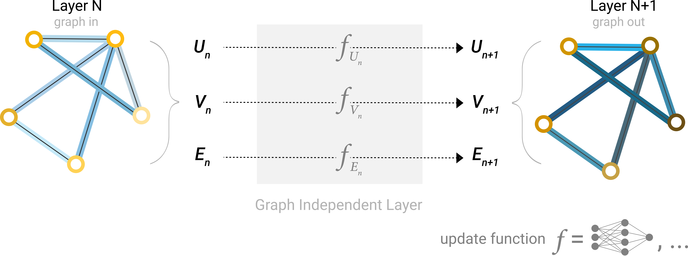
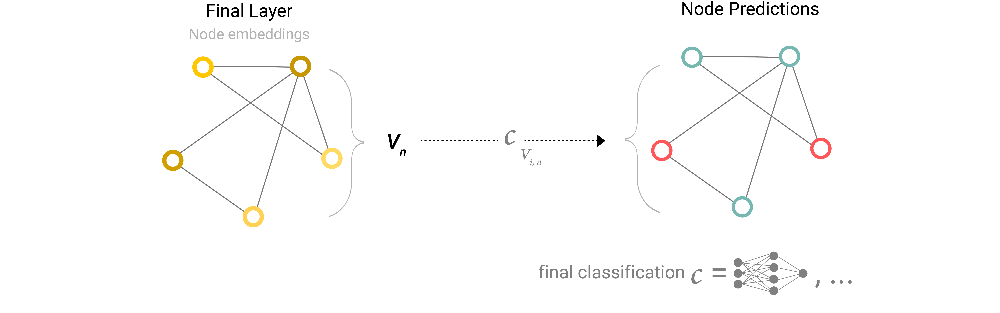

1. Graph Basics
1.1 Graph
\[ G=(V,E)\]
- \(V\): set of nodes
- \(E\): set of edges
- \(|V|\): total count of nodes
- Neighbours\[N(v)= \{ u∈V∣(u,v)∈E \}\]
- All the neighbours of node \(v\): all node \(u\) connected to node \(v\)
1.2 Adjacency Matrix
\[A \in \mathbb{R}^{n \times n}\]
- \(A_{ij}=1\) if node \(i\) is connected to node \(j\).
1.3 Degree Matrix
\[D \in \mathbb{R}^{n \times n}\]
Diagonal matrix, where \(D_{ii} \)is the degree of node i.
- Node degree: simply counts the number of edges incident to a node
\[
d_u = \sum_{v \in V} A[u, v]
\]
1.4 Normalized Adjacency Matrix
\[\hat{A} = \tilde{D}^{-1/2}\tilde{A}\tilde{D}^{-1/2}\]
- This form is called symmetric normalization
- Down-weights high-degree nodes and up-weights low-degree nodes to ensure balanced message passing for nodes with different degrees.
- Meaning of ~: \(\tilde{A} = A + I\)
- Why need: direct multiplication with \(A\) means that, for every node, we sum up all the feature vectors of all neighboring nodes but not the node itself https://tkipf.github.io/graph-convolutional-networks/
- \(\tilde{D}_{ii}=∑_j\tilde{A}_{ij}\)
1.5 Different types of graphs
- Multigraphs
- A graph that allows multiple edges between the same pair of nodes (possibly with different types or weights).
- Hypergraphs
- A generalization of a graph where an edge (called a hyperedge) can connect more than two nodes.
- Hypernodes
- A higher-level node created by compressing a set of nodes into one super-node
- Hierarchical Graphs
- A graph with multiple levels of structure, where each level represents the system at a different scale
- A graph with multiple levels of structure, where each level represents the system at a different scale
2. Node, Edge, and Global Features of Graphs
- Node Features \(V\)\[H_v^{(l)} \in \mathbb{R}^{n \times d}\]
Node embeddings at layer \(l\).
- \(n\): number of nodes
- \(d\): feature dimension per node
- one node: \(h_v\quad (v∈V)\)
- Edge Features \(E\)
Attributes of edges (e.g., weights, distances, types).
- one edge: \(h_{uv}\quad ((u,v)∈E)\)
- Global Features \(U\)
Attributes of the entire graph (e.g., total charge of a molecule).
- notation: \(h_U\)
3. GNN (Graph Neural Network)
- All neural networks designed to operate on graph-structured data are called GNNs
{kind=link}

- GNN layer (blocks): update the embeddings (feature matrix) across layers (does not update adjacency).

\[h_i^{(l+1)} = \text{UPDATE}\Big(h_i^{(l)}, \ \text{AGG}\{h_j^{(l)} : j \in \mathcal{N}(i)\}\Big)\]- So we need an Aggregate Function (part 4) and an Update Function (part 5)
- Note: learnable weights may come from different sources (All functions may have!)
- Message function
- Aggregate function
- Update function
{kind=link}
- Output layer (make predictions)
- Prediction for node \(v\): \(\hat{y_v} =\sigma(Wh_v+b)\)

{kind=link}
4. Message Passing and Aggregate Function
4.1 Pooling Information
- You might have information in the graph stored in edges, but no information in nodes, but still need to make predictions on nodes. We need a way to collect information from edges and give them to nodes for prediction.
- Use in pertiction stage (output layer)
- Edge to node pooling
- The embedding of each node is obtained by aggregating the embedding of its adjacent edges
\[h_v=\rho_{E\to V}({h_{uv}∣(u,v)\in E})\]- \(h_{uv}\): the embedding of edge \((u, v)\)
- \(\rho\): aggregate function (sum / mean / max…)
- \(h_v\): embedding of node \(v\)
- Node to edge pooling\[h_{uv}=\rho_{V\to E}(h_{u}, h_{v})\]
- Node /edge to global pooling
\[h_U=ρ_{V→U}({h_v∣v∈V})\quad or\quad h_U=ρ_{E→U}({h_{uv}∣(u,v)∈E})\]
4.2 Message Passing
- Each node gathers embeddings from its neighbors, aggregates them, and updates its own embedding.
- Is a kind of information propagation!\[h_v^{(l+1)}=f_V^{(l)}(h_v^{(l)}, \rho \{M^{(l)}(h_v^{(l)},h_u^{(l)},h_{uv}):u∈N(v)\})\]
- \(M^{(l)}()\): Message function — pass message from node \(u\) to \(v\)
- \(h_v^{(l)}\): embedding of current node
- \(h_u^{(l)}\): embedding of neighbour node
- \(h_{uv}\): edge embedding (optional)
- \(\rho \{ \}\): Aggregate function — aggregate messages from all neighbours
- sum / mean / max / attention-weighted sum
- Message function may be integrated with the aggregate function
- \(f_V^{(l)}()\): Update function (part 5 for more) — updates the current node \(h_v^{(l)}\)
- \(M^{(l)}()\): Message function — pass message from node \(u\) to \(v\)
- Pooling for propagation
- Node to layer\[h_v^{(l+1)}=f_V^{(l)}(h_v^{(l)}, \rho_{E\to V} \{h_{uv}^{(l)}:u∈N(v)\})\]
- Message passing = pooling + update
- Node to layer
4.3 Global embedding (master node / context vector)
- Gather information from all nodes and edges (Pooling)\[m_U^{(l)} = \rho_{V \to U}\big(\{h_v^{(l)} : v \in V\}\big) \ \cup \ \rho_{E \to U}\big(\{h_{uv}^{(l)} : (u,v) \in E\}\big)\]
- Update the global embedding\[h_U^{(l+1)} = f_U\big(h_U^{(l)}, m_U^{(l)}\big)\]
- Broadcast global information back to nodes and edges\[h_v^{(l+1)} = f_V\big(h_v^{(l)}, m_v^{(l)}, h_U^{(l)}\big) \\ h_{uv}^{(l+1)} = f_E\big(h_{uv}^{(l)}, m_{uv}^{(l)}, h_U^{(l)}\big)\]
- The initial global embedding \(h_U^{(0)}\) can be a zero vector, a learnable parameter, or an aggregation of node/edge features. The choice depends on the task scenario.
4.4 The Graph Laplacian Filter (a kind of aggregation function)
\[L= D - A\]
- The graph Laplacian is symmetric positive semidefinite, so it can be diagonalized: \(L = U \Lambda U^\top\)
- \(U\): eigenvectors
- \(\Lambda\): eigenvalues
- Polynominal fileter can be defined as functions of \(L\):\[ p_w(L)=w_0I+w_1L+w_2L^2+⋯+w_dL^d = \sum_{i=0}^dw_iL^i\]
- \(w_i\): weights that can be updated when training
- \( p_w(L)\) is a matrix with the same dimension as \(L \)
- Polynomial degree = neighborhood range
- The polynomial degree is usually small (1~3) and cannot exceed \(n - 1\)
- Applying the filter to features
- Given a feature matrix \(X \in \mathbb{R}^{n \times d}\), the filtering operation is:
\[X' = p_w(L) X\]
4.5 ChebNet (a kind of aggregation function)
ChebNet is a more stable filter:
\[p_w(L) = \sum_{i=0}^d w_i \, T_i(\tilde{L})
\]
- To avoid eigenvalue explosion, scale the Laplacian into the range \([-1, 1]\): \[\tilde{L} = \frac{2L}{\lambda_{\max}(L)} - I_n\]
- Chebyshev polynomials are recursively defined and numerically stable\[T_0(x) = 1, \quad T_1(x) = x, \quad T_{k+1}(x) = 2x T_k(x) - T_{k-1}(x) \]
5. Update Functions
- Different models may use different update functions
- In all cases below, \(m_v^{(l)}\) is the result of applying the aggregation function:
\[m_v^{(l)}=ρ \{m_{uv}^{(l)}:u∈N(v)\}\]
- Linear/MLP update (standard form)
- Concatenate (or add) the old embedding and the aggregated message, then apply a learnable linear transformation and nonlinearity
\[h_v^{(l+1)} = \sigma\!\big(W \cdot [h_v^{(l)} \Vert m_v^{(l)}]\big)\] - Residual / Skip connection update
- Keep the old embedding as a shortcut connection to prevent over-smoothing, similar to ResNet
\[h_v^{(l+1)} = \sigma\!\big(W \cdot m_v^{(l)} + h_v^{(l)}\big)\]
- GIN-style MLP update
- Use an MLP, with a learnable coefficient \(\epsilon\) to control the weight of the old embedding
\[h_v^{(l+1)} = \text{MLP}\!\Big((1+\epsilon) \cdot h_v^{(l)} + m_v^{(l)}\Big)\] - Recurrent update (GRU/LSTM)
- Use an RNN cell (e.g., GRU or LSTM) to integrate the old embedding and the new message, useful when iterative refinement is needed.
\[h_v^{(l+1)} = \text{GRU}\!\big(h_v^{(l)}, m_v^{(l)}\big)\]
6. Popular Models
- GCN (Graph Convolutional Network)
- Aggregates neighbors via normalized adjacency; simple and efficient
- limited expressive power
- baseline model; for classification tasks
- GraphSAGE (Graph Sample and Aggregate)
- Samples fixed-size neighbors, uses flexible aggregators (mean, LSTM, pooling)
- large-scale graphs
- GAT (Graph Attention Network)
- Uses attention mechanism to weight neighbors differently
- when the importance among neighbors is large (e.g., social media network)
- GIN (Graph Isomorphism Network)
- As powerful as Weisfeiler-Lehman graph isomorphism test
- Weisfeiler-Lehman is a classical algorithm from graph theory used to check whether two graphs are isomorphic (i.e., structurally identical, just with different node labels)
- Molecular mapping and chemical structure analysis (when strong discrimination ability is needed)
- As powerful as Weisfeiler-Lehman graph isomorphism test
- DiffPool (Differentiable Pooling)
- Learns differentiable node-to-cluster assignments for hierarchical pooling
- good for clustering and classification
- Graph U-Net
- Inspired by U-Net: Top-k pooling + unpooling; preserves both local and global info
- Tasks that require a combination of local and global features (image segmentation analogy)
7. Tree Graphs
- Tree-LSTM
- Recursive Neural Network (RecNN)
- Hierarchical GNN
References
Sanchez-Lengeling, B., Reif, E., Pearce, A., & Wiltschko, A. B. (2021). A Gentle Introduction to Graph Neural Networks. Distill.